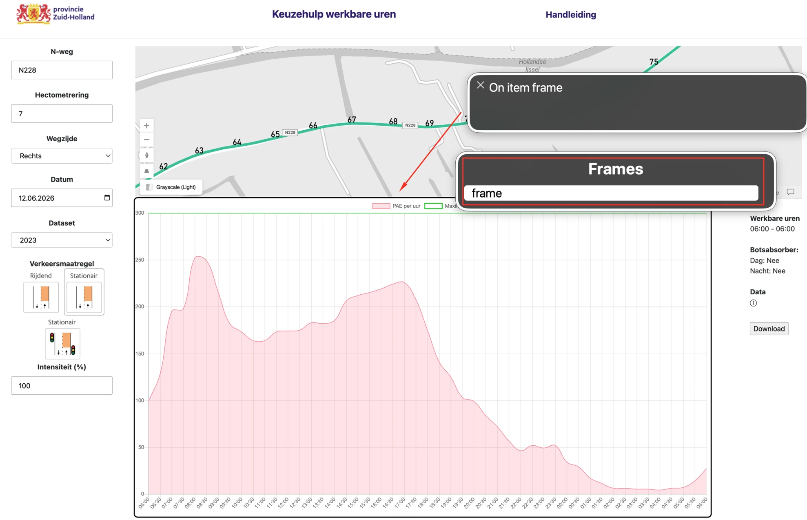
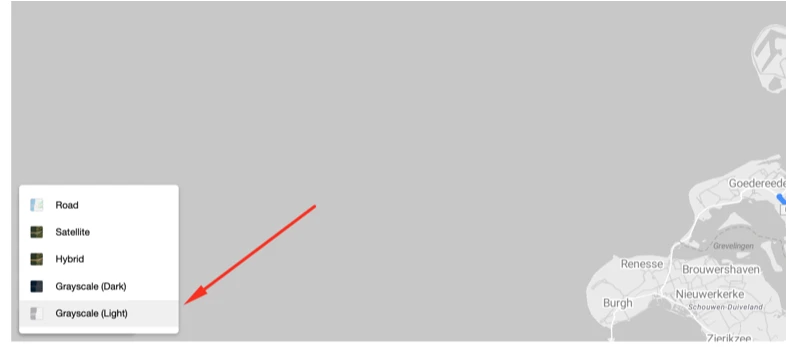
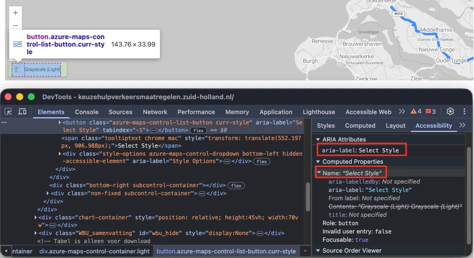
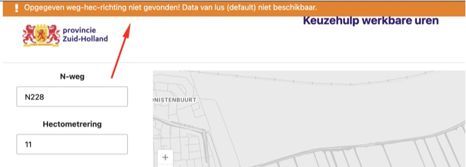
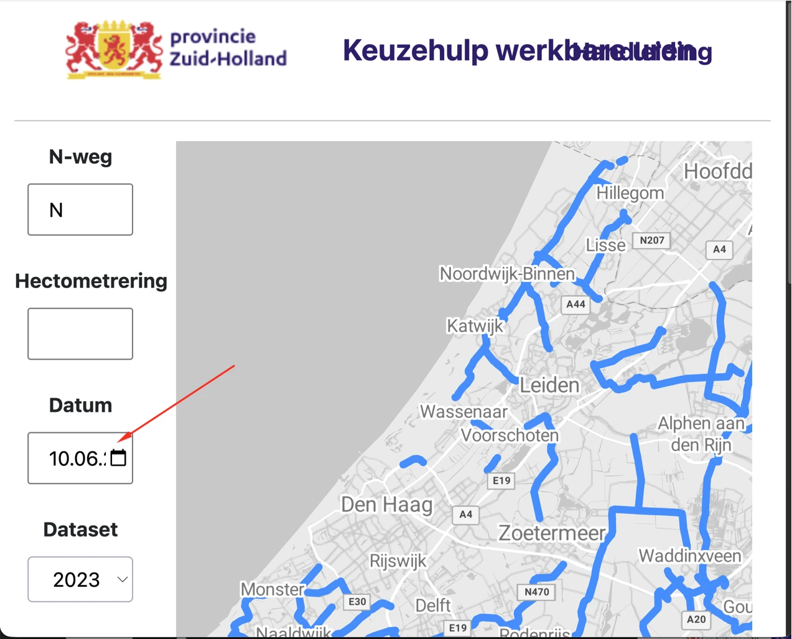
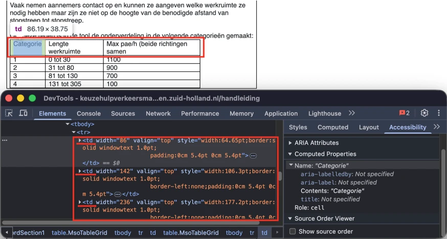

Audit digitale toegankelijkheid van website keuzehulpverkeersmaatregelen.zuid-holland.nl
Samenvatting
Wij hebben de website keuzehulpverkeersmaatregelen.zuid-holland.nl onderzocht tussen 1 juni en 15 juni 2026. Op dit moment is een deel van de succescriteria als voldoende beoordeeld. In dit rapport lees je welke punten nog verbetering behoeven en hoe deze kunnen worden aangepakt.
De hoofdtaal van deze pagina is Nederlands, maar het lang-attribuut staat ten onrechte op "en". Het lang-attribuut op het html-element hoort de hoofdtaal van de pagina nauwkeurig weer te geven. In dit geval moet dat lang="nl" zijn. Schermlezers gebruiken dit attribuut om de juiste uitspraakregels toe te passen. Een onjuist lang-attribuut leidt tot verkeerde uitspraak en maakt de inhoud lastig te begrijpen voor schermlezergebruikers.
Wanneer de hoofdtaal correct is vastgelegd, hoort inhoud die bewust in een andere taal staat gemarkeerd te worden met het juiste lang-attribuut voor die taal. Een alternatief is om die inhoud te vertalen naar de hoofdtaal van de pagina, zodat een taalwisseling niet nodig is.
Op de pagina https://keuzehulpverkeersmaatregelen.zuid-holland.nl/ bevat de interactieve kaart bijvoorbeeld bedieningselementen met Engelstalige toegankelijke namen, zoals "Reset to Default Rotation", "Reset to Default Pitch", "Provide Map Data Feedback" en andere. Als deze elementen in het Engels blijven, hoort er een passend taalattribuut bij te staan. Anders moeten ze naar het Nederlands worden vertaald, zodat ze overeenkomen met de hoofdtaal van de pagina.
User story
Als bezoeker die de website met een schermlezer laat voorlezen, hoor ik de Nederlandse tekst verkeerd uitgesproken, omdat de taal verkeerd is ingesteld. Ik heb nodig dat mijn schermlezer de inhoud met de juiste Nederlandse uitspraak voorleest. Als delen van de pagina in een andere taal staan, heb ik nodig dat mijn schermlezer voor die delen overschakelt naar de juiste uitspraak.
Hoe te testen
Bekijk het <html lang="...">-attribuut via DevTools. Het moet aanwezig zijn en overeenkomen met de hoofdtaal van de inhoud. Als delen van de pagina in een andere taal staan, controleer dan of die elementen met een passend lang-attribuut zijn gemarkeerd.
Oplossing
Zorg ervoor dat het lang-attribuut op deze pagina is ingesteld op lang="nl". Als delen van de inhoud in een andere taal staan, markeer die delen dan met het juiste lang-attribuut (bijvoorbeeld lang="en" voor Engelstalige inhoud). Een alternatief is om die delen naar het Nederlands te vertalen, zodat de hele pagina consequent één taal gebruikt.
Het logo bovenaan de website, dat tegelijk een link is, heeft geen tekstalternatief (SC 1.1.1). Het alt-attribuut ontbreekt.
Daardoor heeft deze link geen toegankelijke naam (SC 4.1.2). Schermlezergebruikers kunnen het doel of de bestemming van de link niet vaststellen (SC 2.4.4). Alle links horen een toegankelijke naam te hebben die duidelijk de bestemming beschrijft.
Daarnaast is de zichtbare tekst op het logo "provincie Zuid-Holland" niet opgenomen in de toegankelijke naam van de link. Daardoor kan de link niet met spraakbesturing worden geactiveerd (SC 2.5.3). Wanneer de zichtbare tekst afwijkt van de toegankelijke naam, werken spraakcommando's op basis van die zichtbare tekst niet.
User story
Als bezoeker die de website met een schermlezer lees, navigeer ik naar het logo bovenaan de pagina en kan ik niet vaststellen welke organisatie het voorstelt of waar de link naartoe gaat. Ik heb nodig dat het logo een betekenisvol tekstalternatief heeft en dat de link een duidelijke toegankelijke naam heeft die de bestemming beschrijft. Als het logo zichtbare tekst bevat, heb ik ook nodig dat die tekst in de toegankelijke naam zit, zodat spraakcommando's op basis van het zichtbare label werken.
Hoe te testen
Bekijk de logolink met DevTools en een schermlezer. Controleer of de logo-afbeelding een betekenisvol tekstalternatief heeft en of de link een beschrijvende toegankelijke naam doorgeeft. Controleer of de toegankelijke naam de organisatie in het logo benoemt en de bestemming van de link beschrijft. Als het logo zichtbare tekst bevat, controleer dan of die tekst in de toegankelijke naam zit. Controleer met een schermlezer of de link met een betekenisvolle naam wordt aangekondigd en niet alleen als "link" of een ander nietszeggend label. Controleer met spraakbesturing of de link kan worden geactiveerd met de zichtbare tekst die in het logo staat.
Oplossing
Geef de logolink een betekenisvolle toegankelijke naam. Als het logo is opgebouwd als een afbeelding binnen een link, hoort de afbeelding een alt-attribuut te hebben dat de organisatie benoemt en aangeeft dat de link naar de homepage van "Keuzehulp werkbare uren" leidt. De toegankelijke naam moet de zichtbare tekst "Provincie Zuid-Holland" bevatten en duidelijk maken dat de bestemming de homepage van "Keuzehulp werkbare uren" is. Bijvoorbeeld: "Provincie Zuid-Holland, homepage Keuzehulp werkbare uren".
Wanneer de pagina's worden bekeken op een schermresolutie van 1280 bij 1024 pixels en worden ingezoomd tot 200%, overlappen de volgende teksten elkaar: "Keuzehulp werkbare uren" en "Handleiding".
Inzoomen tot 200% mag de leesbaarheid van geen enkel informatief element aantasten.
Hetzelfde gebeurt wanneer de pagina's worden ingezoomd tot 400%.
User story
Als bezoeker die inzoomt op deze pagina, zie ik dat sommige tekst verdwijnt of over andere inhoud heen valt. Ik heb nodig dat alle tekst zichtbaar en leesbaar blijft bij 200% en 400% zoom.
Hoe te testen
Zet de browser op 1280px breed en zoom in tot 200% en daarna tot 400%. Alle tekst moet leesbaar blijven en er mag geen inhoud of functie verloren gaan. Test het hamburgermenu, de meelopende headers en de formulieren.
Oplossing
Zorg ervoor dat alles blijft werken en leesbaar blijft wanneer een bezoeker tot 200% en 400% inzoomt op een scherm van 1280 bij 1024 pixels.
Wanneer de pagina's worden bekeken op een schermresolutie van 1280 bij 1024 pixels en worden ingezoomd tot 400%, verschijnt er een schuifbalk.
Horizontaal scrollen mag niet nodig zijn, ook niet wanneer de viewport is ingesteld op of ingezoomd tot 320 CSS-pixels breed (voor verticale content) of 256 CSS-pixels hoog (voor horizontale content). Zorg ervoor dat de tekst binnen het scherm past. Scrollen in twee richtingen mag alleen als dat echt nodig is voor de betekenis of het gebruik van de inhoud. Uitzonderingen zijn tabellen, betekenisvolle afbeeldingen en kaarten. Die moeten leesbaar blijven, dus scrollen binnen deze elementen is toegestaan.
User story
Als bezoeker met een visuele beperking zoom ik in tot 400% om de pagina te kunnen lezen. Nu verschijnt er een horizontale schuifbalk en moet ik op elke regel heen en weer scrollen. Ik heb nodig dat de tekst automatisch binnen de breedte van mijn scherm past.
Hoe te testen
Zet de browser op 320 CSS-pixels breed (of 1280px op 400% zoom) en scroll verticaal. Er mag geen horizontaal scrollen nodig zijn om inhoud te lezen, behalve voor echte tweedimensionale inhoud zoals tabellen, kaarten en code. Let op vaste-breedtebanners, headers en lange URL's.
Oplossing
Controleer of horizontaal scrollen nodig is. Is dat niet zo, zorg er dan voor dat horizontaal scrollen niet mogelijk is bij het inzoomen.
Op deze pagina is in de header de tekst "Keuzehulp werkbare uren" niet als kop gemarkeerd.
Wanneer tekst als kop fungeert maar de juiste opmaak in de code mist, verliest die zijn semantische betekenis en is hij niet bruikbaar voor bezoekers die hulpsoftware zoals een schermlezer gebruiken. Koppen zijn cruciaal om door de inhoud te navigeren en de structuur te begrijpen.
Een vergelijkbaar probleem speelt bij de teksten "Werkbare uren", "Botsabsorber" en "Data", die verschijnen wanneer bezoekers filters toepassen zoals "N-weg" en "Hectometrering".
User story
Als bezoeker die de website met een schermlezer lees, navigeer ik van kop naar kop. Nu mis ik koppen die alleen visueel zijn opgemaakt. Ik heb nodig dat alle zichtbare koppen door mijn schermlezer als kop worden herkend.
Hoe te testen
Snelle controle met onze tool: gebruik de Heading Structure Checker. Plak de URL van de pagina en bekijk de lijst met koppen.
Loop elke tekst op de pagina langs die er visueel uitziet als een kop (groter, vetter, een opvallende kleur of een nadrukkelijke plaatsing). Staan ze allemaal in de lijst van de Heading Structure Checker? Zo niet, dan zijn ze niet opgemaakt met h1 tot en met h6.
Controleer met een schermlezer: navigeer met H (NVDA, JAWS) of de rotor (VoiceOver). Elke visuele kop moet als kop worden aangekondigd.
Oplossing
Zorg ervoor dat de teksten zijn opgemaakt met de juiste kop-elementen (h1 tot en met h6), passend bij hun rol en de hiërarchie van de inhoud.
Deze pagina bevat een formulier waarin het label-element met de tekst "Wegzijde" niet expliciet aan het bijbehorende select-element is gekoppeld.
Label-elementen horen via het for-attribuut aan hun formulierelement gekoppeld te zijn, en dat for-attribuut moet verwijzen naar het id van het bijbehorende formulierelement. Deze koppeling geeft het element een toegankelijke naam en vergroot het klikbare gebied van het label, wat de bruikbaarheid en toegankelijkheid verbetert.
Omdat het label niet in de code aan het select-element is gekoppeld, krijgt het element geen toegankelijke naam. Daardoor weten schermlezergebruikers mogelijk niet waar het veld voor dient (SC 4.1.2).
Daarnaast is de zichtbare tekst "Wegzijde" niet opgenomen in de toegankelijke naam van het element. Bezoekers die spraakbesturing gebruiken, activeren formulierelementen vaak door hun zichtbare label uit te spreken. Wanneer het zichtbare label en de toegankelijke naam niet overeenkomen, werken spraakcommando's op basis van die zichtbare tekst mogelijk niet. Dit raakt ook succescriterium 2.5.3 (Label in Name).
User story
Als bezoeker die de website met een schermlezer en spraakbesturing gebruik, navigeer ik naar een formulierveld en heb ik nodig dat het label er correct aan gekoppeld is, zodat ik begrijp waar het veld voor dient. Wanneer ik het zichtbare label uitspreek om het veld te activeren, heb ik nodig dat het veld op mijn commando reageert. Als het label niet aan het veld is gekoppeld of niet in de toegankelijke naam zit, kan ik het veld niet herkennen of activeren.
Hoe te testen
Bekijk het formulierelement en het bijbehorende label in DevTools. Controleer of het label in de code aan het formulierelement is gekoppeld, via een for/id-relatie of een andere geldige labelmethode. Controleer in de toegankelijkheidsboom of het element een toegankelijke naam heeft die de zichtbare labeltekst bevat. Controleer met een schermlezer of het doel van het veld correct wordt aangekondigd. Controleer met spraakbesturing of het element kan worden geactiveerd door het zichtbare label uit te spreken.
Oplossing
Koppel het label-element aan het bijbehorende formulierelement met het for-attribuut op het label, dat verwijst naar het id van het formulierelement. Zorg ervoor dat de toegankelijke naam van het element de zichtbare labeltekst "Wegzijde" bevat, zodat zowel schermlezergebruikers als bezoekers met spraakbesturing het veld kunnen herkennen en activeren.
#7 - De relatie tussen radioknoppen is niet in de code vastgelegd
Op deze pagina staat een groep radioknoppen die met afbeeldingen wordt weergegeven, voorafgegaan door de tekst "Verkeersmaatregel". De opties worden visueel als groep gepresenteerd, maar de relatie tussen het groepslabel en de radioknoppen is niet in de code vastgelegd. Daardoor kan hulpsoftware niet betrouwbaar vaststellen dat de radioknoppen bij het label "Verkeersmaatregel" horen, en begrijpen bezoekers de context van de beschikbare opties mogelijk niet.
User story
Als bezoeker die de website met een schermlezer lees, navigeer ik door een groep radioknoppen. Nu hoor ik de losse opties, maar niet de vraag waar ze bij horen. Ik heb nodig dat mijn schermlezer het groepslabel aankondigt vóór de opties, zodat ik begrijp wat ik kies.
Hoe te testen
Navigeer met een schermlezer naar de groep radioknoppen. Controleer of de groep samen met het label wordt aangekondigd vóór de losse radioknopopties. Bekijk de HTML en controleer of de radioknoppen binnen een fieldset-element staan en of het groepslabel met een legend-element is opgegeven. Controleer of de relatie tussen het groepslabel en de radioknoppen zichtbaar is in de toegankelijkheidsboom.
Oplossing
Groepeer de bij elkaar horende radioknoppen binnen een fieldset-element en geef het groepslabel met een legend-element. De legend hoort de tekst "Verkeersmaatregel" (of een ander passend groepslabel) te bevatten, zodat hulpsoftware het label in de code aan alle radioknoppen in de groep kan koppelen.
Zo kondigen schermlezers het groepslabel aan zodra bezoekers de groep radioknoppen betreden en begrijpen ze de context van de beschikbare opties.
Op deze pagina wordt onder "Verkeersmaatregel" een groep radioknoppen met afbeeldingen weergegeven. Deze afbeeldingen geven de beschikbare opties aan, maar hebben lege alt-attributen (alt=""). Daardoor bieden de afbeeldingen geen tekstalternatief en krijgen de bijbehorende radioknoppen geen toegankelijke naam.
Wanneer je met een schermlezer door de groep radioknoppen navigeert, worden de elementen wel als radioknop aangekondigd, maar hun labels niet. Bezoekers kunnen daardoor niet vaststellen welke optie elke radioknop voorstelt.
Omdat de afbeeldingen de betekenis van de beschikbare opties overbrengen, hebben ze een passend tekstalternatief nodig. Daarnaast moet elke radioknop een toegankelijke naam hebben, zodat hulpsoftware het doel van het element kan vaststellen.
Verder bevatten de afbeeldingen zichtbare teksten, zoals "Rijdend", "Stationair" en "Stationair stop", die niet zijn opgenomen in de toegankelijke namen van de radioknoppen. Daardoor werken spraakcommando's op basis van die zichtbare tekst mogelijk niet. Dit raakt ook succescriterium 2.5.3 (Label in Name).
User story
Als bezoeker die een schermlezer gebruik, navigeer ik door de radioknoppen en hoor ik dat er radioknoppen aanwezig zijn, maar niet wat de opties betekenen. Ik heb nodig dat elke radioknop een duidelijke naam heeft, zodat ik begrijp welke optie ik kies.
Hoe te testen
Navigeer met een schermlezer naar de groep radioknoppen en loop elke optie langs. Controleer of elke radioknop wordt aangekondigd met een betekenisvolle naam die de optie beschrijft die hij voorstelt. Bekijk de toegankelijkheidsboom en controleer of elke radioknop een toegankelijke naam heeft. Als er afbeeldingen als label worden gebruikt, controleer dan of die een passend tekstalternatief hebben.
Oplossing
Geef elke radioknop een toegankelijke naam. Als een afbeelding als label voor een radioknop wordt gebruikt, hoort die afbeelding een passend tekstalternatief te hebben dat de optie beschrijft. Een alternatief is om een tekstlabel toe te voegen en dat met een label-element aan de radioknop te koppelen.
De toegankelijke naam moet dezelfde betekenis overbrengen die ziende bezoekers uit de afbeelding halen, en moet alle zichtbare tekst bevatten die deel uitmaakt van de optie. Waar zichtbare tekst aanwezig is, hoort die in de toegankelijke naam te staan, bij voorkeur aan het begin. Elke radioknop hoort een unieke, betekenisvolle toegankelijke naam te hebben die de optie binnen de groep duidelijk benoemt.
Zorg ervoor dat de toegankelijke naam en het zichtbare label van de radioknop overeenkomen, zodat zowel gebruikers van hulpsoftware als bezoekers met spraakbesturing de juiste optie kunnen herkennen en activeren. Zie de voorbeeldcode bij de bevinding hierboven ("De relatie tussen radioknoppen is niet in de code vastgelegd").
#9 - Extra content is niet met het toetsenbord te activeren
Impact: GrootType: TechniekWCAG: 2.1.1EN: 9.2.1.1
Op deze pagina verschijnt een extra sectie wanneer de filters "N-weg" en "Hectometrering" worden toegepast. In deze sectie toont een "i"-icoon onder "Data" extra content bij hover, maar deze functionaliteit is niet beschikbaar voor toetsenbordgebruikers. Tooltips moeten ook bereikbaar zijn voor bezoekers die alleen het toetsenbord gebruiken.
User story
Als bezoeker die de website met het toetsenbord gebruik, navigeer ik door de pagina en krijgt een knop focus, maar de extra content verschijnt niet. Ik heb nodig dat dezelfde informatie ook zonder muis zichtbaar is. Het informatie-icoon biedt extra informatie, maar ik kan het niet bereiken of activeren. Ik heb nodig dat ik dezelfde informatie kan opvragen die bij hover met de muis verschijnt.
Hoe te testen
Navigeer alleen met het toetsenbord door de pagina en probeer het "i"-icoon in de sectie "Data" te bereiken. Controleer of het icoon toetsenbordfocus krijgt en of de extra informatie zonder muis te bereiken is. Vergelijk het toetsenbordgedrag met het hovergedrag van de muis en controleer of dezelfde informatie voor beide groepen bezoekers beschikbaar is.
Oplossing
Zorg ervoor dat het element dat de extra informatie toont, met het toetsenbord bedienbaar is. Bouw het informatie-icoon bijvoorbeeld als een echte button of een ander focusbaar element en maak de extra informatie beschikbaar zodra het element focus krijgt of met het toetsenbord wordt geactiveerd. Toetsenbordgebruikers moeten dezelfde informatie kunnen opvragen die bij hover met de muis verschijnt.
Op deze pagina verschijnt een extra sectie wanneer de filters "N-weg" en "Hectometrering" worden toegepast. In deze sectie toont een "i"-icoon onder "Data" extra content bij hover. Deze extra content kan niet worden gesloten zonder de muis van de trigger weg te bewegen.
Bezoekers die een schermvergroter gebruiken, kunnen merken dat de extra content de onderliggende pagina-inhoud bedekt. Zonder een manier om de overlay te sluiten, bijvoorbeeld met de Escape-toets, blijft de bedekte inhoud onbereikbaar. WCAG vereist dat content die bij hover of focus verschijnt, te sluiten is.
User story
Als bezoeker die inzoomt tot 200% om de pagina te lezen, ga ik met de muis over een element en verschijnt er extra content die een deel van de pagina bedekt. Ik heb nodig dat ik die content kan sluiten zonder mijn muis te verplaatsen, bijvoorbeeld door op Escape te drukken.
Hoe te testen
Ga met de muis over het "i"-icoon en controleer of de extra content verschijnt. Controleer terwijl de content zichtbaar is of die te sluiten is zonder de muis te verplaatsen, bijvoorbeeld met de Escape-toets. Controleer of de content zichtbaar blijft wanneer je de muis erop beweegt en niet verdwijnt totdat je hem sluit of de hover weghaalt. Herhaal de controle met alleen het toetsenbord.
Oplossing
Zorg ervoor dat de extra content te sluiten is zonder de muis of de toetsenbordfocus te verplaatsen. Laat bezoekers de content bijvoorbeeld sluiten met de Escape-toets.
#11 - Interactief element heeft geen juiste rol of geen toegankelijke naam
Op deze pagina verschijnt een extra sectie wanneer de filters "N-weg" en "Hectometrering" worden toegepast. In deze sectie toont een "i"-icoon onder "Data" extra content bij hover. Dit interactieve element heeft echter geen juiste rol en geen toegankelijke naam.
Interactieve elementen moeten zowel hun rol als hun naam doorgeven aan hulpsoftware. De rol geeft aan wat voor element het is (bijvoorbeeld een knop of een link), terwijl de toegankelijke naam het doel of de functie aangeeft. Zonder deze informatie kan een schermlezer het element niet correct herkennen of de functie ervan uitleggen.
Daardoor komen schermlezergebruikers het icoon mogelijk tegen zonder te horen dat het interactief is of welke actie het uitvoert. Bezoekers kunnen de extra informatie bij het icoon dan niet vinden of opvragen.
User story
Als bezoeker die de website met een schermlezer gebruik, kom ik het informatie-icoon tegen en hoor ik niet wat voor element het is of wat het doet. Ik heb nodig dat mijn schermlezer mij vertelt dat het element interactief is en wat de functie ervan is, zodat ik kan beslissen of ik het activeer.
Hoe te testen
Bekijk het informatie-icoon met DevTools en een schermlezer. Controleer of het element een passende interactieve rol en een betekenisvolle toegankelijke naam heeft. Controleer of hulpsoftware zowel aankondigt wat het element is als wat het doet. Interactieve elementen horen hun rol, naam, status en waarde door te geven waar dat van toepassing is.
Oplossing
Zorg ervoor dat het element is opgebouwd als een passend interactief element, zoals een button, en dat het een betekenisvolle toegankelijke naam heeft die het doel beschrijft. De toegankelijke naam moet duidelijk maken dat het element extra informatie biedt. Hulpsoftware moet zowel de rol als de functie van het element kunnen aankondigen. Omdat het icoon extra informatie toont, hoort die informatie ook voor hulpsoftware beschikbaar te zijn.
#12 - Iframe dat zichtbaar is voor hulpsoftware heeft geen toegankelijke naam
Impact: GrootType: TechniekWCAG: 4.1.2EN: 9.4.1.2

Op deze pagina staat onder de kaart een iframe-element. Dit iframe heeft geen toegankelijke naam, omdat een title, aria-label of andere benoemingsmethode ontbreekt. Daardoor komen schermlezergebruikers een naamloos frame tegen wanneer ze door de pagina navigeren of de beschikbare elementen bekijken. Bezoekers kunnen het doel van het frame niet vaststellen en navigeren er mogelijk in, terwijl het geen betekenisvolle inhoud bevat.
Schermlezers bieden verschillende manieren om door de structuur van een pagina te navigeren, waaronder lijsten met frames, landmarks, links, koppen en andere elementen. Omdat dit iframe wel als frame zichtbaar is maar geen toegankelijke naam heeft, komen schermlezergebruikers een naamloos frame tegen wanneer ze de beschikbare elementen bekijken of door de paginastructuur navigeren. Bezoekers kunnen het iframe binnengaan, maar horen niet waar het voor dient en vinden er mogelijk geen betekenisvolle inhoud.
Omdat het iframe alleen een technisch doel dient en geen inhoud biedt die voor bezoekers bedoeld is, hoort het niet zichtbaar te zijn voor hulpsoftware.
User story
Als bezoeker die een schermlezer gebruik, navigeer ik door de pagina of bekijk ik de beschikbare iframes, en heb ik nodig dat elk zichtbaar frame een duidelijk doel en een naam heeft. Als ik een naamloos frame tegenkom, kan ik niet vaststellen wat het bevat of of het relevant is voor mijn taak.
Hoe te testen
Bekijk de toegankelijkheidsboom met DevTools en test met een schermlezer. Controleer of er iframe-elementen zichtbaar zijn voor hulpsoftware. Controleer of elk zichtbaar iframe een passende toegankelijke naam heeft en een betekenisvol doel voor bezoekers dient. Elementen die puur technisch zijn en geen inhoud voor bezoekers bieden, horen niet zichtbaar te zijn voor hulpsoftware.
Oplossing
Omdat het iframe alleen voor technische functionaliteit wordt gebruikt en geen inhoud of functionaliteit bevat die voor bezoekers bedoeld is, hoort het niet zichtbaar te zijn voor hulpsoftware. Verberg het iframe voor hulpsoftware, bijvoorbeeld met aria-hidden="true" of een andere techniek die voorkomt dat het zichtbaar is voor schermlezers.
#13 - Grafiek in een canvas-element heeft geen kort tekstalternatief
Impact: GrootType: TechniekWCAG: 1.1.1EN: 9.1.1.1
Op deze pagina verschijnt een grafiek wanneer filters zoals "N-weg" en "Hectometrering" worden toegepast. Deze grafiek wordt weergegeven in een canvas-element. De grafiek toont visueel data, maar het canvas biedt geen tekstalternatief dat de grafiek en het doel ervan benoemt.
Grafieken zijn complexe niet-tekstuele inhoud. Gebruikers van hulpsoftware horen te weten dat er een grafiek aanwezig is en welke informatie die voorstelt. Er is weliswaar een downloadbaar bestand met de grafiekgegevens beschikbaar, maar de grafiek zelf biedt geen kort tekstalternatief dat de grafiek benoemt en bezoekers laat weten dat er een uitgebreid alternatief beschikbaar is.
Daardoor weten schermlezergebruikers mogelijk niet dat er een grafiek aanwezig is, welke informatie die overbrengt, of dat er ergens anders op de pagina een uitgebreid alternatief beschikbaar is.
User story
Als bezoeker die een schermlezer gebruik, kom ik een grafiek tegen en heb ik nodig dat ik weet dat er een grafiek is en begrijp welke informatie die voorstelt. Als de grafiek geen tekstalternatief heeft, besef ik mogelijk niet dat er belangrijke informatie beschikbaar is of waar ik de uitgebreide gegevens kan vinden.
Hoe te testen
Bekijk de grafiek met DevTools en een schermlezer. Controleer of de grafiek een betekenisvol tekstalternatief heeft dat de grafiek en het doel ervan benoemt. Controleer of gebruikers van hulpsoftware kunnen vaststellen welke informatie de grafiek bevat en of ze een uitgebreid alternatief kunnen vinden, zoals een datatabel of een downloadbaar gegevensbestand.
Oplossing
Geef de grafiek een kort tekstalternatief dat de grafiek benoemt en het doel ervan samenvat. Het tekstalternatief moet aangeven dat het element een grafiek is en kort beschrijven welke informatie die toont.
Omdat er een uitgebreid alternatief beschikbaar is, zoals een downloadbaar bestand, hoort het tekstalternatief bezoekers er ook op te wijzen dat de uitgebreide gegevens beschikbaar zijn. Bijvoorbeeld: "Vlakdiagram met de verkeersintensiteit (PAE per uur) voor weg N228 op hectometer 8 op 10-06-2026. De gedetailleerde grafiekgegevens zijn beschikbaar via de Download-knop naast de grafiek.".
Zorg ervoor dat het tekstalternatief in de code aan de grafiek is gekoppeld en dat gebruikers van hulpsoftware het uitgebreide alternatief eenvoudig kunnen vinden.
#14 - Onderdeel van de gebruikersinterface heeft onvoldoende contrast
Op deze pagina verschijnt een grafiek wanneer filters zoals "N-weg" en "Hectometrering" worden toegepast. Verschillende grafische objecten in de grafiek, waaronder de grafieklijnen, de puntmarkeringen en de legenda-indicatoren, worden weergegeven in kleuren met onvoldoende contrast ten opzichte van de aangrenzende achtergrondkleuren.
Grafische objecten die nodig zijn om de inhoud te begrijpen, moeten een contrast van minimaal 3,0:1 hebben ten opzichte van aangrenzende kleuren. Onvoldoende contrast maakt de grafiekgegevens lastig waarneembaar voor bezoekers met slechtziendheid of kleurzwakte, of voor bezoekers die de pagina onder lastige lichtomstandigheden bekijken.
De roze lijn (#FF6384) die in de legenda "PAE per uur" voorstelt, heeft bijvoorbeeld een contrast van 2,8:1 ten opzichte van de witte achtergrond. De groene lijn (#00C80A) die in de legenda "Maximum" voorstelt, heeft een contrast van 2,3:1 ten opzichte van de witte achtergrond. De lichtgrijze rasterlijnen van de grafiek (#E5E5E5) hebben een contrast van 1,3:1 ten opzichte van de witte achtergrond van de grafiek.
Hetzelfde probleem speelt in de grafiek zelf. De roze lijn die "PAE per uur" voorstelt, de groene lijn die "Maximum" voorstelt en de bijbehorende puntmarkeringen die verschijnen bij interactie met de grafiek, hebben onvoldoende contrast ten opzichte van de aangrenzende achtergrondkleur. Daardoor kunnen bezoekers met slechtziendheid of kleurzwakte deze grafische objecten lastig waarnemen en onderscheiden.
User story
Als bezoeker met een visuele beperking bekijk ik grafieken en diagrammen en heb ik nodig dat ik de lijnen, markeringen en andere grafische elementen kan onderscheiden van de achtergrond. Als grafische objecten onvoldoende contrast hebben, kan ik de getoonde gegevens niet waarnemen of interpreteren.
Hoe te testen
Meet het contrast van alle grafische objecten die nodig zijn om de grafiek te begrijpen, waaronder datalijnen, puntmarkeringen, legenda-indicatoren en andere elementen die gegevens voorstellen, ten opzichte van aangrenzende kleuren. Grafische objecten die nodig zijn om de inhoud te begrijpen, moeten een contrast van minimaal 3,0:1 hebben. Decoratieve elementen die niet nodig zijn om de grafiek te begrijpen, hoeven niet aan deze eis te voldoen.
Oplossing
Zorg ervoor dat alle grafische objecten die nodig zijn om de grafiek te begrijpen, waaronder de datalijnen, puntmarkeringen en legenda-indicatoren, een contrast van minimaal 3,0:1 hebben ten opzichte van aangrenzende kleuren. Pas de kleuren van de grafiekelementen, de achtergrond, of beide aan om aan het minimumcontrast te voldoen.
#15 - Actieve knop alleen in kleur
Impact: GrootType: TechniekWCAG: 1.4.1EN: 9.1.4.1

Op deze pagina staat op de kaart een bediening voor de kaartstijl die een menu opent met stijlopties zoals "Road", "Satellite" en andere. De stijl die op dat moment is gekozen, wordt alleen onderscheiden van de andere opties door een andere achtergrondkleur. Er is geen extra visuele aanwijzing om de geselecteerde status aan te geven.
Bezoekers die het kleurverschil niet kunnen waarnemen, waaronder bezoekers met kleurzwakte, bezoekers die de pagina op een monochroom scherm bekijken of bezoekers in fel licht, kunnen niet vaststellen welke kaartlaag op dat moment is geselecteerd. Informatie hoort niet alleen met kleur te worden overgebracht.
User story
Als bezoeker die kleuren slecht kan onderscheiden, open ik het menu met kaartstijlen en kan ik niet zien welke optie is geselecteerd, omdat de geselecteerde optie alleen met een kleurverschil wordt aangegeven. Ik heb nodig dat de geselecteerde optie ook een andere visuele aanwijzing heeft, zoals een vinkje, een rand, een icoon of een wijziging in de tekststijl.
Hoe te testen
Bekijk de pagina in grijswaarden (DevTools > Rendering > Emulate vision deficiencies). Overal waar kleur informatie overbrengt, zoals verplichte velden, foutmeldingen, linkopmaak in lopende tekst of grafieksegmenten, is een tweede aanwijzing nodig: tekst, een icoon, een onderstreping of een patroon.
Oplossing
Geef de geselecteerde optie een extra visuele aanwijzing die niet alleen op kleur berust. De geselecteerde kaartstijl moet herkenbaar blijven wanneer kleurverschillen niet kunnen worden waargenomen, bijvoorbeeld met een zichtbaar icoon, een rand, een omtrek, een wijziging in de tekststijl of een andere visuele aanwijzing zonder kleur die de geselecteerde status duidelijk overbrengt.
Op deze pagina bevat de kaart de link "Microsoft Azure". Deze tekst voldoet niet aan het minimumcontrast van 4,5:1 ten opzichte van de achtergrond. Wanneer de kaartstijl bijvoorbeeld "Grayscale (Light)" is, staat de grijze tekst (#737373) op de lichtgrijze achtergrond (#EEEEEE). Het contrast is 4,1:1.
Een vergelijkbaar probleem speelt bij de teksten op de kaart, zoals locatienamen.
Normale tekst (kleiner dan 18pt, of kleiner dan 14pt vet) heeft een contrast van minimaal 4,5:1 nodig om leesbaar te zijn. Onvoldoende contrast maakt tekst lastig of onmogelijk leesbaar voor bezoekers met slechtziendheid, kleurzwakte of bezoekers die hun scherm in een felle omgeving bekijken.
User story
Als bezoeker met een visuele beperking lees ik een pagina en kan ik tekst met te weinig contrast niet onderscheiden van de achtergrond. Ik heb nodig dat tekst altijd duidelijk afsteekt tegen zijn achtergrond.
Hoe te testen
Gebruik een contrastchecker zoals axe DevTools, de Colour Contrast Analyser of Stark om het contrast tussen de tekst en de achtergrond te meten. Test de tekst op het normale weergaveformaat en gewicht. Uitgeschakelde elementen zijn van deze eis uitgezonderd.
Oplossing
Pas de tekstkleur of de achtergrondkleur aan zodat het contrast minimaal 4,5:1 is. Controleer dit met een contrastchecker zoals de Colour Contrast Analyser.
#17 - Onderdeel van de gebruikersinterface heeft onvoldoende contrast
Op deze pagina wordt het wegvak op de kaart weergegeven met een blauwe lijn (#1E90FF). Deze lijn is een grafisch object dat informatie overbrengt en nodig is om de inhoud op de kaart te begrijpen. De lijn heeft echter onvoldoende contrast ten opzichte van de lichtgrijze achtergrond (#EAEAEA): 2,7:1.
User story
Als bezoeker met een visuele beperking bekijk ik een kaart en heb ik nodig dat ik de gemarkeerde route kan onderscheiden van de omringende kaartinhoud. Als de gemarkeerde route onvoldoende contrast heeft ten opzichte van de achtergrond, kan ik die niet herkennen of volgen.
Hoe te testen
Meet het contrast van grafische objecten die informatie overbrengen, zoals gemarkeerde routes, kaartoverlays, markeringen en andere niet-tekstuele elementen, ten opzichte van aangrenzende kleuren. Grafische objecten die nodig zijn om de inhoud te begrijpen, moeten een contrast van minimaal 3,0:1 hebben.
Oplossing
Zorg ervoor dat het gemarkeerde wegvak een contrast van minimaal 3,0:1 heeft ten opzichte van de aangrenzende kaartkleuren. Pas de kleur van de route, de omringende kaartkleuren, of beide aan, zodat bezoekers het geselecteerde wegvak duidelijk kunnen waarnemen en onderscheiden van de achtergrond.
#18 - Zichtbare tekst ontbreekt in de toegankelijke naam van het interactieve element
Impact: GrootType: TechniekWCAG: 2.5.3EN: 9.2.5.3

Op deze pagina bevat de kaart de knop waarmee je de kaartstijl kiest. De zichtbare tekst op deze knop toont de gekozen optie, bijvoorbeeld "Grayscale (Light)". De toegankelijke naam van de knop is "Select Style". Dit verschil kan problemen geven voor bezoekers die met spraakbesturing met de pagina werken. Spraakcommando's zijn gebaseerd op de zichtbare tekst van elementen. Als de toegankelijke naam daar sterk van afwijkt, werken de spraakcommando's niet.
Een vergelijkbaar probleem speelt bij de link "Microsoft Azure". De toegankelijke naam is "Microsoft".
User story
Als bezoeker die de website met spraakbesturing gebruik, spreek ik de zichtbare tekst van een knop uit, maar de knop reageert niet. Ik heb nodig dat de knop activeert wanneer ik de tekst uitspreek die ik op het scherm zie.
Hoe te testen
Vergelijk voor elk element met een zichtbaar tekstlabel die tekst met de toegankelijke naam (via het toegankelijkheidspaneel van DevTools of een schermlezer). De zichtbare tekst hoort aan het begin van de toegankelijke naam te staan. Probeer spraakbesturing met "Klik [zichtbare tekst]" om dit te controleren.
Oplossing
Zorg ervoor dat de toegankelijke naam de zichtbare tekst bevat, bij voorkeur aan het begin. Idealiter is de toegankelijke naam gelijk aan de zichtbare tekst.
#19 - Statusmelding wordt niet aangekondigd
Impact: GrootType: TechniekWCAG: 4.1.3EN: 9.4.1.3

Op deze pagina toont een formulier met filters een statusmelding: "Opgegeven weg-hec-richting niet gevonden! Data van lus (default) niet beschikbaar.". Deze melding wordt niet aangekondigd aan schermlezergebruikers, omdat er geen passende ARIA-live region of rol wordt gebruikt. Bezoekers die een schermlezer gebruiken, missen daardoor belangrijke feedback over het resultaat van hun actie.
User story
Als bezoeker die de website met een schermlezer lees, verstuur ik een formulier en hoor ik niet of dat is gelukt. Ik heb nodig dat mijn schermlezer het resultaat van mijn verzending automatisch aankondigt.
Hoe te testen
Loop met een actieve schermlezer elke actie op de pagina langs die een statusmelding geeft zonder dat er een nieuwe pagina laadt: verstuur een formulier, voeg iets toe aan de winkelwagen, voer een zoekopdracht uit, wacht op een laadindicator. Elke melding moet worden aangekondigd zonder dat de focus ernaartoe gaat, meestal via role="status", aria-live="polite" of een vergelijkbare live region.
Oplossing
Gebruik een ARIA-live region om de statusmelding aan te kondigen. Gebruik role="status" voor meldingen over geslaagde acties of role="alert" voor foutmeldingen, zodat de melding automatisch wordt aangekondigd zonder de focus te verplaatsen.
Op deze pagina toont een formulier met filters een statusmelding: "Opgegeven weg-hec-richting niet gevonden! Data van lus (default) niet beschikbaar.". De witte tekst van de melding staat op de oranje achtergrond (#E67E22). Het contrast is 2,8:1.
Normale tekst (kleiner dan 18pt, of kleiner dan 14pt vet) heeft een contrast van minimaal 4,5:1 nodig om leesbaar te zijn. Onvoldoende contrast maakt tekst lastig of onmogelijk leesbaar voor bezoekers met slechtziendheid, kleurzwakte of bezoekers die hun scherm in een felle omgeving bekijken.
User story
Als bezoeker met een visuele beperking lees ik een pagina en kan ik tekst met te weinig contrast niet onderscheiden van de achtergrond. Ik heb nodig dat tekst altijd duidelijk afsteekt tegen zijn achtergrond.
Hoe te testen
Gebruik een contrastchecker zoals axe DevTools, de Colour Contrast Analyser of Stark om het contrast tussen de tekst en de achtergrond te meten. Test de tekst op het normale weergaveformaat en gewicht. Uitgeschakelde elementen zijn van deze eis uitgezonderd.
Oplossing
Pas de tekstkleur of de achtergrondkleur aan zodat het contrast minimaal 4,5:1 is. Controleer dit met een contrastchecker zoals de Colour Contrast Analyser.
#21 - Content gaat verloren bij 200% zoom
Impact: GrootType: TechniekWCAG: 1.4.4EN: 9.1.4.4

Wanneer deze pagina wordt bekeken op een schermresolutie van 1280 bij 1024 pixels en wordt ingezoomd tot 200%, gaat de volgende tekst gedeeltelijk verloren: zie het jaartal in het veld "Datum".
Inzoomen tot 200% mag de leesbaarheid van geen enkel informatief element aantasten.
User story
Als bezoeker die inzoomt tot 200% om de pagina te lezen, zie ik dat sommige tekst verdwijnt of over andere inhoud heen valt. Ik heb nodig dat alle tekst zichtbaar en leesbaar blijft bij 200% zoom.
Hoe te testen
Zet de browser op 1280px breed en zoom in tot 200%. Alle tekst moet leesbaar blijven en er mag geen inhoud of functie verloren gaan. Test het hamburgermenu, de meelopende headers en de formulieren. Test op mobiel ook met de systeemtekstgrootte op het maximum.
Oplossing
Zorg ervoor dat alles blijft werken en leesbaar blijft wanneer een bezoeker tot 200% inzoomt op een scherm van 1280 bij 1024 pixels.
Op deze pagina ontbreekt een title-element. Het title-element is verplicht voor elke webpagina en hoort een unieke, korte beschrijving van de inhoud van de pagina te bevatten, bij voorkeur gevolgd door de naam van de organisatie. Deze titel wordt weergegeven in de browsertab en is cruciaal voor bezoekers om het doel van de pagina te begrijpen en te navigeren tussen pagina's of browsertabs.
User story
Als bezoeker die de website met een schermlezer lees, open ik een nieuwe tab en hoor ik geen paginatitel. Ik kan dan niet vaststellen waar ik ben. Ik heb nodig dat elke pagina een duidelijke, unieke titel heeft.
Hoe te testen
Controleer de titel van elke pagina in de browsertab. De titel moet het onderwerp of doel van de pagina beschrijven en uniek zijn binnen de site. Pdf's en app-schermen hebben ook een betekenisvolle titel nodig, ingesteld in de documenteigenschappen en niet alleen zichtbaar op het scherm.
Oplossing
Voeg een title-element toe aan de pagina met een duidelijke, beschrijvende titel.
#23 - Hoofdtaal van de pagina is verkeerd vastgelegd
Impact: GrootType: TechniekWCAG: 3.1.1EN: 9.3.1.1
De inhoud van deze pagina is in het Nederlands, maar de paginataal is ingesteld op Engels (lang="en"). Daarnaast bevat de pagina tegenstrijdige taalverklaringen, waaronder lang="en-NL" op het body-element en talloze lang="NL"-attributen op losse tekstelementen.
Het grote aantal Nederlandse taalverklaringen op losse elementen wijst erop dat de paginataal op documentniveau niet correct is vastgelegd. De hoofdtaal van de pagina hoort één keer voor de hele pagina te worden ingesteld. Taalattributen horen alleen op losse woorden of passages te staan wanneer die in een andere taal zijn geschreven.
Schermlezers gebruiken de paginataal om te bepalen hoe tekst moet worden uitgesproken. Wanneer de verkeerde taal is ingesteld, kan inhoud verkeerd worden uitgesproken en lastig te begrijpen worden.
User story
Als bezoeker die een schermlezer gebruik, open ik een pagina die in het Nederlands is geschreven en heb ik nodig dat de schermlezer automatisch de Nederlandse uitspraakregels gebruikt. Als de pagina als Engels is vastgelegd, kan de inhoud verkeerd worden uitgesproken en lastig te begrijpen worden.
Hoe te testen
Bekijk het html-element en controleer of het lang-attribuut overeenkomt met de hoofdtaal van de pagina. Gebruik een schermlezer en controleer of de pagina in de juiste taal wordt aangekondigd en uitgesproken. Als er inhoud in een andere taal dan de hoofdtaal staat, controleer dan of alleen die specifieke passages met een passend lang-attribuut zijn gemarkeerd.
Oplossing
Stel het lang-attribuut op het html-element in op de hoofdtaal van de pagina. Voor deze pagina is de juiste waarde Nederlands (lang="nl"). Verwijder de tegenstrijdige taalverklaringen die de pagina als Engels aanduiden (zoals lang="en-NL"). Gebruik taalattributen alleen op losse elementen wanneer die passages in een andere taal zijn geschreven dan de hoofdtaal van de pagina. Zo kan hulpsoftware de inhoud correct herkennen en uitspreken.
#24 - Kop is niet als kop gemarkeerd
Impact: MediumType: ContentWCAG: 1.3.1EN: 9.1.3.1
Op deze pagina is in de header de tekst "Handleiding" niet als kop gemarkeerd.
Wanneer tekst als kop fungeert maar de juiste opmaak in de code mist, verliest die zijn semantische betekenis en is hij niet bruikbaar voor bezoekers die hulpsoftware zoals een schermlezer gebruiken. Koppen zijn cruciaal om door de inhoud te navigeren en de structuur te begrijpen.
Een vergelijkbaar probleem speelt bij teksten zoals "WBU Webapplicatie", "1. Inwinnen data", "Datakwaliteit controle" en andere. Ook deze teksten zijn koppen, maar zijn niet als zodanig gemarkeerd.
User story
Als bezoeker die de website met een schermlezer lees, navigeer ik van kop naar kop. Nu mis ik koppen die alleen visueel zijn opgemaakt. Ik heb nodig dat alle zichtbare koppen door mijn schermlezer als kop worden herkend.
Hoe te testen
Snelle controle met onze tool: gebruik de Heading Structure Checker. Plak de URL van de pagina en bekijk de lijst met koppen.
Loop elke tekst op de pagina langs die er visueel uitziet als een kop (groter, vetter, een opvallende kleur of een nadrukkelijke plaatsing). Staan ze allemaal in de lijst van de Heading Structure Checker? Zo niet, dan zijn ze niet opgemaakt met h1 tot en met h6.
Controleer met een schermlezer: navigeer met H (NVDA, JAWS) of de rotor (VoiceOver). Elke visuele kop moet als kop worden aangekondigd.
Oplossing
Zorg ervoor dat de teksten zijn opgemaakt met de juiste kop-elementen (h1 tot en met h6), passend bij hun rol en de hiërarchie van de inhoud.
#25 - Visuele lijst is niet met lijst-elementen opgemaakt
Impact: GrootType: TechniekWCAG: 1.3.1EN: 9.1.3.1
Op deze pagina wordt inhoud visueel als lijst gepresenteerd (met nummers), maar is die niet in de code opgemaakt met HTML-lijst-elementen (ul, ol, li). Zie de lijsten onder "WBU Webapplicatie" en "3. Lay-out". Zie ook de lijst in de tabel "Verkeersaanbod op rijbanen met verkeer in twee richtingen (Rijdend)" naast de tekst "Ervaringen in de provincie Limburg wijzen uit dat de volgende I/C verhoudingen gehanteerd kunnen worden:".
Zonder de juiste lijstopmaak kan een schermlezer de inhoud niet als lijst herkennen of aankondigen hoeveel items die bevat. Bezoekers die hulpsoftware gebruiken, missen daardoor belangrijke structuurinformatie die ziende bezoekers wel visueel kunnen waarnemen.
User story
Als bezoeker die de website met een schermlezer lees, kom ik een lijst tegen en hoor ik niet hoeveel items er zijn of dat het een lijst is. Ik heb nodig dat mijn schermlezer de structuur en het aantal items aankondigt.
Hoe te testen
Loop de pagina langs met DevTools en een schermlezer. Visuele koppen, lijsten, tabellen, fieldsets en actieve statussen moeten allemaal in de HTML bestaan en niet alleen als opgemaakte tekst. Gebruik axe voor een snelle automatische scan en controleer daarna of de structuur klopt wanneer een schermlezer die regel voor regel voorleest. Voor datatabellen bekijkt onze Table Checker de opmaak (th, scope, headers/id) in één overzicht.
Oplossing
Maak de visuele lijst op met de juiste HTML-lijst-elementen: ul voor ongeordende lijsten of ol voor geordende lijsten, met elk item in een li-element.
#26 - Links alleen in kleur te onderscheiden van de omringende tekst
Op deze pagina bevatten alinea's links: ".PDF", ".DOCX" en "tvm@pzh.nl". Kleur is het enige verschil tussen deze links en de statische tekst. Alleen op kleur vertrouwen om links te onderscheiden is een probleem voor bezoekers met slechtziendheid of kleurenblindheid.
User story
Als bezoeker die kleuren slecht kan onderscheiden, lees ik een tekst met links en kan ik niet zien welke woorden klikbaar zijn. Ik heb nodig dat links ook een onderstreping of een andere visuele aanwijzing hebben.
Hoe te testen
Bekijk de pagina in grijswaarden (DevTools > Rendering > Emulate vision deficiencies). Overal waar kleur informatie overbrengt, zoals verplichte velden, foutmeldingen, linkopmaak in lopende tekst of grafieksegmenten, is een tweede aanwijzing nodig: tekst, een icoon, een onderstreping of een patroon.
Oplossing
Het kleurcontrast tussen de link en de omringende tekst hoort minimaal 3,0:1 te zijn, en er hoort een extra onderscheid te zijn wanneer de link hover of focus krijgt.
#27 - Afbeeldingen hebben geen tekstalternatief (alt-attribuut ontbreekt)
Op deze pagina staan meerdere afbeeldingen zonder alt-attribuut.
Deze afbeeldingen zijn informatief en brengen informatie over aan ziende bezoekers. De afbeeldingen in de tabel "Stationaire afzetting" worden bijvoorbeeld gebruikt om verschillende verkeersmaatregelen te illustreren en brengen daarmee informatie over die nodig is om de inhoud te begrijpen. Deze afbeeldingen hebben echter geen tekstalternatief. Daardoor kunnen schermlezergebruikers de informatie in de afbeeldingen niet opvragen.
Hetzelfde probleem speelt in de sectie "3. Lay-out", waar informatieve iconen staan naast de tekst die begint met "Indien gekozen is voor een rijdende afzetting op een …" en naast de tekst "Tot slot kan nog op het volgende icoontje worden geklikt:". Ook deze iconen brengen informatie over maar hebben geen tekstalternatief.
Alle informatieve afbeeldingen horen een tekstalternatief te hebben dat dezelfde betekenis of hetzelfde doel overbrengt als de visuele inhoud.
User story
Als bezoeker die de website met een schermlezer lees, kom ik een afbeelding tegen en leest mijn schermlezer een bestandsnaam voor in plaats van een beschrijving. Ik heb nodig dat elke afbeelding een duidelijke beschrijving heeft of als decoratief is gemarkeerd.
Hoe te testen
Bekijk elke afbeelding, elk icoon en elke SVG in DevTools. Informatieve elementen hebben een toegankelijke naam nodig die hun betekenis overbrengt: een alt-attribuut op een <img>, een aria-label of <title>-element op een SVG, of een toegankelijke naam op icoonlettertypen. Decoratieve elementen horen helemaal niet in de HTML te staan; gebruik daarvoor een CSS-achtergrond. Staat een decoratief element toch in de HTML, verberg het dan voor hulpsoftware met aria-hidden="true" (of alt="" als het echt een <img> is). Controleer met een schermlezer dat er geen ruis (bestandsnaam, "afbeelding") wordt aangekondigd.
Oplossing
Als de afbeelding puur decoratief is en geen betekenis overbrengt, hoort het alt-attribuut aanwezig maar leeg te zijn (alt=""). Als de afbeelding informatief is, hoort het alt-attribuut een duidelijke, korte beschrijving van de inhoud van de afbeelding te bevatten.
#28 - Complexe afbeelding biedt geen toegankelijk tekstalternatief
Op deze pagina worden in de sectie "2. Verkeersmaatregelen" afbeeldingen gebruikt om datatabellen met verkeersintensiteiten en andere bijbehorende informatie te tonen, bijvoorbeeld in de tabel "Wisselstrook met doorgangsregeling". De afbeelding bevat gestructureerde informatie, waaronder tabelkoppen, rijen, kolommen en getallen. De informatie in de afbeelding is echter niet beschikbaar in een toegankelijk tekstformaat.
Omdat de afbeeldingen meer informatie overbrengen dan redelijkerwijs in een kort tekstalternatief past, gaat het om een complexe afbeelding. Een korte beschrijving kan de afbeelding benoemen, maar geeft bezoekers geen toegang tot de gegevens in de tabel.
Daardoor kunnen schermlezergebruikers en andere bezoekers die de afbeelding niet kunnen waarnemen, de informatie in de tabel mogelijk niet opvragen.
Daarnaast maakt tekst in afbeeldingen de inhoud ontoegankelijk voor veel bezoekers. Zij kunnen de tekst niet vergroten of aanpassen (lettertype, kleur en dergelijke) aan hun behoeften.
User story
Als bezoeker die een schermlezer gebruik, kom ik een afbeelding met een tabel tegen en heb ik nodig dat ik dezelfde informatie kan opvragen die ziende bezoekers uit de afbeelding kunnen lezen. Als de tabel alleen als afbeelding beschikbaar is, kan ik de waarden en de relaties daarin niet opvragen.
Hoe te testen
Spoor afbeeldingen op die gestructureerde informatie bevatten, zoals tabellen, grafieken, diagrammen of andere complexe inhoud. Controleer of de informatie in de afbeelding ook in een toegankelijk tekstformaat beschikbaar is. Een kort tekstalternatief kan de afbeelding benoemen, maar bezoekers moeten ook de onderliggende gegevens en relaties uit de afbeelding kunnen opvragen.
Oplossing
Bied de informatie in de afbeelding aan in een toegankelijk tekstformaat. Voor datatabellen heeft het de voorkeur om de informatie als HTML-tabel op te bouwen in plaats van als afbeelding van een tabel. Als de afbeelding moet blijven, geef dan een kort tekstalternatief dat de afbeelding benoemt en een aanvullend tekstalternatief dat alle informatie in de tabel overbrengt, inclusief de koppen, waarden en relaties. Zo kunnen gebruikers van hulpsoftware over dezelfde informatie beschikken als ziende bezoekers.
Het is bovendien sterk aan te raden om echte tekst te gebruiken in plaats van tekst in afbeeldingen. Zo kunnen bezoekers de weergave van de tekst aanpassen voor een betere leesbaarheid.
Op deze pagina worden in de sectie "2. Verkeersmaatregelen" afbeeldingen gebruikt om datatabellen te tonen. De tekst in deze afbeeldingen voldoet niet aan het vereiste minimumcontrast van 4,5:1 ten opzichte van de achtergrond.
In de tabel "Wisselstrook met doorgangsregeling" bevat de afbeelding met de tabel bijvoorbeeld teksten zoals "Maximale intensiteit bij ongeregelde wisselstroken", "70 m", "n.v.t." en andere. Omdat het een afbeelding is, varieert de tekstkleur, maar die voldoet nog steeds niet aan het minimumcontrast. De grijze tekst (#A3A3A3) heeft een contrast van 2,5:1 ten opzichte van de witte achtergrond.
In de tabel "Verkeersaanbod op rijbanen met verkeer in twee richtingen (Rijdend)" toont de afbeelding transparant grijze tekst (#5E861E) op een groene achtergrond (#88BC18), met een contrast van 1,9:1. De transparant grijze tekst (#858911) op de gele achtergrond (#FFFE10) heeft een contrast van 3,5:1. De transparant grijze tekst (#AD4E15) op de oranje achtergrond (#FD890A) heeft een contrast van 2,3:1. De transparant witte tekst (#F8A7A2) op de rode achtergrond (#EF190F) heeft een contrast van 2,3:1. Zie ook de andere voorbeelden.
Normale tekst (kleiner dan 18pt, of kleiner dan 14pt vet) heeft een contrast van minimaal 4,5:1 nodig om leesbaar te zijn. Onvoldoende contrast maakt tekst lastig of onmogelijk leesbaar voor bezoekers met slechtziendheid, kleurzwakte of bezoekers die hun scherm in een felle omgeving bekijken.
User story
Als bezoeker met een visuele beperking lees ik een pagina en kan ik tekst met te weinig contrast niet onderscheiden van de achtergrond. Ik heb nodig dat tekst altijd duidelijk afsteekt tegen zijn achtergrond.
Hoe te testen
Gebruik een contrastchecker zoals axe DevTools, de Colour Contrast Analyser of Stark om het contrast tussen de tekst en de achtergrond te meten. Test de tekst op het normale weergaveformaat en gewicht. Uitgeschakelde elementen zijn van deze eis uitgezonderd.
Oplossing
Pas de tekstkleur of de achtergrondkleur aan zodat het contrast minimaal 4,5:1 is. Controleer dit met een contrastchecker zoals de Colour Contrast Analyser.
#30 - Datatabel mist de juiste opmaak
Impact: MediumType: ContentWCAG: 1.3.1EN: 9.1.3.1

Op deze pagina staat in de tabel "Stationair Wisselstrook met verkeerslichtenregeling (verkeersregelaars)" een datatabel onder de tekst "Om deze reden is in de tool de onderverdeling in de volgende categorieën gemaakt:". De juiste opmaak ontbreekt.
De datatabel heeft een koprij of -kolom met cellen die bij de datacellen horen. De schermlezer heeft de juiste opmaak nodig om deze relatie aan een blinde bezoeker over te brengen.
User story
Als bezoeker die de website met een schermlezer lees, navigeer ik door een tabel en hoor ik alleen losse getallen en tekst zonder context. Ik heb nodig dat mijn schermlezer bij elke cel de bijbehorende kop aankondigt.
Hoe te testen
Loop de pagina langs met DevTools en een schermlezer. Visuele koppen, lijsten, tabellen, fieldsets en actieve statussen moeten allemaal in de HTML bestaan en niet alleen als opgemaakte tekst. Gebruik axe voor een snelle automatische scan en controleer daarna of de structuur klopt wanneer een schermlezer die regel voor regel voorleest. Voor datatabellen bekijkt onze Table Checker de opmaak (th, scope, headers/id) in één overzicht.
Oplossing
Dit kan door de kopcellen in th-elementen te plaatsen en de datacellen in td-elementen.
#31 - Inhoudstructuur is niet correct zichtbaar voor hulpsoftware
Op deze pagina staan in de sectie "2. Verkeersmaatregelen" tabellen. In deze tabellen fungeren teksten zoals "Stationaire afzetting", "Rijdende afzetting", "Wisselstrook met doorgangsregeling" en andere visueel als kop: ze introduceren en benoemen de inhoud die erop volgt. Deze teksten zijn echter opgemaakt als vetgedrukte tekst in een tabelcel in plaats van als een semantische kop.
Koppen brengen de structuur van een pagina over en helpen bezoekers begrijpen hoe de inhoud is geordend. Hulpsoftware gebruikt kopopmaak om sectietitels te herkennen en om tussen secties te navigeren. Wanneer tekst er visueel uitziet als kop maar niet als zodanig is opgemaakt, wordt de relatie tussen de titel en de bijbehorende inhoud niet in de code overgebracht.
De inhoud is opgebouwd met lay-outtabellen en visuele opmaak die zichtbaar zijn voor hulpsoftware. Daardoor kondigen schermlezers tabelstructuur en extra groepen aan die geen betekenisvolle relaties binnen de inhoud voorstellen. Dit kan de inhoud lastiger te begrijpen en te doorlopen maken.
Daardoor kunnen schermlezergebruikers deze sectietitels mogelijk niet als kop herkennen en krijgen ze onnodige structuurmeldingen die niet bijdragen aan het begrip van de inhoud.
User story
Als bezoeker die een schermlezer gebruik, navigeer ik door een pagina en vertrouw ik op koppen om de structuur van de inhoud te begrijpen en snel tussen secties te springen. Als visuele koppen niet als kop zijn opgemaakt en lay-outopmaak als tabelstructuur zichtbaar is, kan ik lastig begrijpen hoe de inhoud is geordend en lastig tussen secties navigeren.
Hoe te testen
Bekijk de paginastructuur met DevTools en een schermlezer. Controleer of tekst die visueel als kop fungeert, is opgebouwd met semantische kopopmaak (h1 tot en met h6) of een gelijkwaardige toegankelijke kopstructuur. Controleer of hulpsoftware een betekenisvolle inhoudstructuur doorgeeft en lay-outtabellen niet als datatabellen aankondigt.
Oplossing
Maak deze teksten op als semantische koppen met een passend kop-element (h1 tot en met h6).
Als de bestaande tabellen alleen voor visuele lay-out worden gebruikt en geen tabelgegevens bevatten, verberg dan de tabelsemantiek voor hulpsoftware met role="presentation" (of role="none"). Zo kondigen schermlezers geen onnodige tabelstructuur aan, terwijl de visuele lay-out behouden blijft.
Bijvoorbeeld:
<h3>Stationaire afzetting</h3>
<tablerole="presentation"> ... </table>
Zo kunnen gebruikers van hulpsoftware door koppen navigeren en krijgen ze geen onnodige tabelmeldingen.
Over dit onderzoek
Leeswijzer
Onze rapporten zijn anders. Bij het bespreken van de gevonden problemen volgen wij niet de structuur van de norm, maar die van jouw website of app. Hierdoor kun je gewoon per pagina of scherm aan de slag gaan. Wel zo makkelijk! Je vindt verderop een overzicht van alle pagina’s met problemen.
We geven je bij elk gevonden issue een paar voorbeelden, maar niet een complete lijst. Controleer zelf of het probleem ook nog op andere plekken voorkomt. Zie het rapport als een leidraad.
Gebruikte norm
Dit onderzoek laat zien in hoeverre de website op dit moment voldoet aan WCAG 2.2, niveau A en AA. WCAG staat voor Web Content Accessibility Guidelines. Dit is de internationale norm voor digitale toegankelijkheid. De Europese norm EN 301 549 bevat alle eisen van WCAG op niveau A en AA.
In dit rapport hebben we korte beschrijvingen van de succescriteria uit de norm opgenomen, met een algemene uitleg erbij. Wil je ze helemaal lezen? Bekijk dan de documentatie van WCAG.
Gebruikte onderzoeksmethode
We gebruiken de onderzoeksmethode WCAG-EM van het W3C. Het proces ziet er als volgt uit:
vaststellen wat binnen en buiten scope valt
vaststellen welke technologieën zijn gebruikt
steekproef (sample) samenstellen
steekproef onderzoeken
gevonden issues beschrijven
Het grootste deel van het onderzoek doen we met de hand. Voor een deel van de toegankelijkheidseisen gebruiken we automatische tools als ondersteuning, zoals axe-core en Chrome Developer Tools.
Belangrijk om te weten
Dit rapport helpt je om de toegankelijkheid van je website te verbeteren. Maar let op: het is geen definitieve, volledige lijst van alle aanwezige toegankelijkheidsproblemen. Dat zit zo:
Het is een steekproef
Ten eerste is het onderzoek gebaseerd op een steekproef. Die is op een betrouwbare manier genomen, en de meeste problemen zullen daardoor zeker aan het licht komen. Toch kan een probleem net buiten de steekproef vallen. Bij een volgend onderzoek kan het wel ontdekt worden.
Op basis van falsificatie
We beoordelen vanuit het principe van falsificatie. Dat houdt in dat we proberen te bewijzen dat iets niet waar is, in plaats van te bevestigen dat het klopt. ‘Voldoet’ betekent daarom dat we geen reden hebben gevonden om een punt af te keuren. Maar als we later wél een reden vinden, kan het alsnog worden afgekeurd.
Voortschrijdend inzicht
Het komt voor dat de beoordeling van een succescriterium op detailniveau verandert. De norm beschrijft namelijk niet élk mogelijk scenario. Samen met andere onderzoeksbureaus overleggen we hoe we met bepaalde situaties omgaan. Zo kan iets dat nu wordt afgekeurd, soms bij een volgend onderzoek worden goedgekeurd en andersom.
Oplossen leidt tot nieuw probleem
Ten slotte kan het gebeuren dat bij het oplossen van een probleem onbedoeld een nieuw toegankelijkheidsprobleem ontstaat. Dat komt dan bij een volgend onderzoek pas naar voren.
Hoe werkt dit rapport?
Bevindingen bekijken en filteren
Alle gevonden toegankelijkheidsproblemen staan onder Gevonden problemen. Je kunt de bevindingen filteren op:
Impact (Groot, Medium, Klein, Advies) — hoe ernstig is het probleem voor de gebruiker?
Type (Content, Techniek) — moet de inhoud of de techniek worden aangepast?
Status (Open, Opgelost) — welke problemen zijn al verholpen?
Voortgang bijhouden
Je kunt je voortgang op twee manieren bijhouden:
CSV-export — exporteer alle bevindingen als CSV-bestand en laad het in een (online) spreadsheet om met je team samen te werken.
Jira-export — exporteer alle bevindingen als Jira-compatibel CSV-bestand. Importeer het via Jira > Issues > Import issues from CSV. Bevindingen worden aangemaakt als bugs met prioriteit op basis van impact.
Registreer in de browser — activeer deze optie om per bevinding bij te houden of het is opgelost. Je voortgang wordt opgeslagen in je browser. Niemand anders kan je resultaat zien. Let op: de voortgang is gekoppeld aan je browser. Als je een andere browser of een ander apparaat gebruikt, begint de telling opnieuw.
Plan van aanpak — download een geprioriteerd plan van aanpak om de gevonden problemen stap voor stap op te lossen. Dit is beschikbaar bij audits vanaf maart 2026.
Link naar een specifieke bevinding delen
Bij elke bevinding verschijnt een link-icoon wanneer je er met de muis overheen gaat. Klik op dit icoon om de directe link naar die bevinding te kopiëren. Je kunt deze link plakken in een e-mail of chatbericht, bijvoorbeeld om een vraag te stellen aan Proper Access over een specifiek punt.